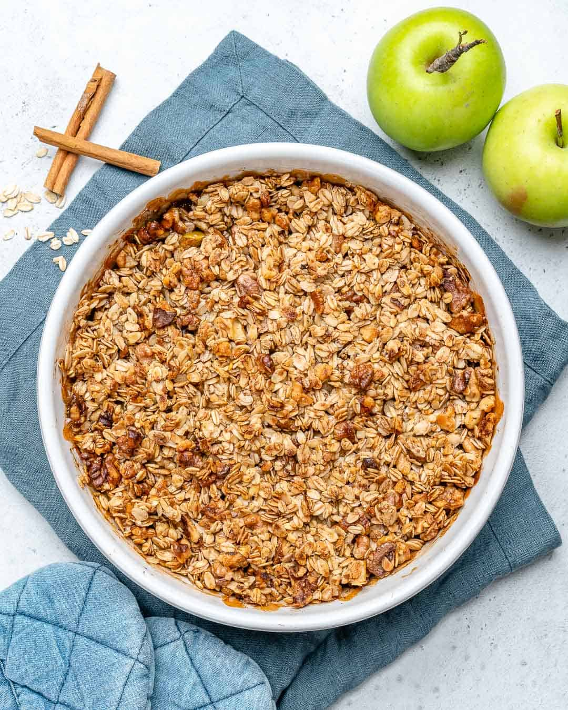

Back
Apple Crumble

Description
Apple crumble has apples in it, and thus has a place in my heart.
I like apples. Apple crumble is a good desert after diner or
breakfast. Learn how to make it.
Ingredients
- 170 grams unsalted butter, melted
- 180 grams all-purpose flour
- 300 grams packed dark brown sugar, divided
- 80 grams old-fashioned rolled oats
- 113 grams pecans, chopped
- 1 teaspoon kosher salt
- 3½ pounds mixed apples, peeled, cored, and cut into ½-inch wedges
- 1 tablespoon ground cinnamon
- 2 tablespoons fresh lemon juice
Steps
- Heat oven to 350 degrees Fahrenheit
- Butter baking dish
- Combine the flour, 200 grams brown sugar, oats, pecans, and salt in a bowl
- Add the butter and stir with fork until the crumbs are evenly moist
- Add the apples to the baking dish and toss with the remaining 100 grams brown sugar, cinnamon, and lemon juice
- Spread the apples evenly
- Press the crumb mixture together to create clumps of different sizes, and sprinkle on top of the apples
- Transfer to the oven, and bake for about 50 to 60 minutes or until the apples are tender and the crumb topping is crisp and deep golden brown
- Serve warm or at room temperature
Stolen from